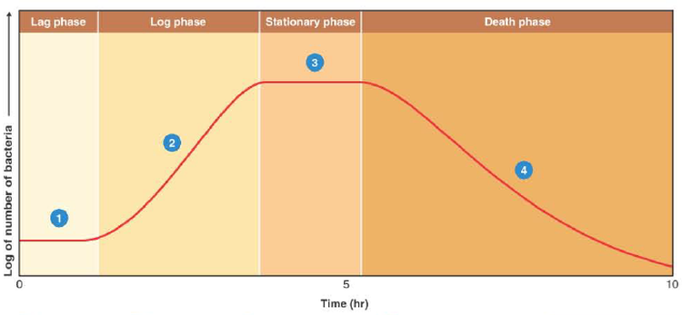
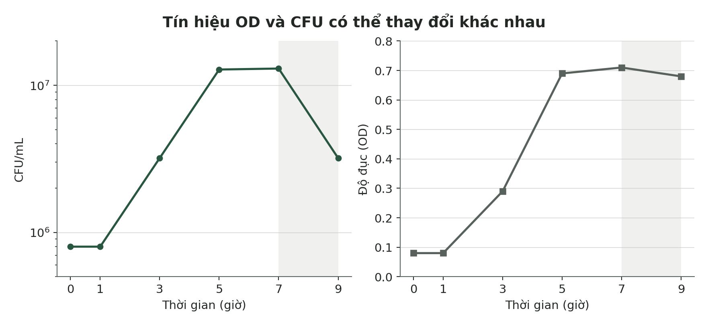

Động học sinh trưởng và đo mật độ
Slide 5–6 · Điều kiện, đường cong và định lượng · 8 trắc nghiệm và 1 tự luận
Bắt đầu học ↓Học buổi rút gọn · đọc hình và làm 10 câu · Học trọn chương và làm bộ 80 trắc nghiệm, 15 tự luận
Sau buổi này
- Giải thích bốn pha đường cong sinh trưởng trong hệ kín.
- Tính số thế hệ, thời gian thế hệ và mật độ CFU từ bảng cho trước.
- Phân biệt tín hiệu OD, đếm trực tiếp và CFU.
Gợi nhớ · 5 phút
Ở lúc bắt đầu và sau ba lần nhân đôi, số lượng thay đổi theo hệ số bao nhiêu? Nhắc lại khác biệt giữa thể tích và mật độ.
Đọc hình và nắm kiến thức · 20 phút
Quan sát hình minh họa

Đường cong gốc đặt bốn pha liền nhau từ thích nghi đến suy vong. Trục đứng ghi log số vi khuẩn. Bài tập theo dõi CFU/mL.
Quan sát · Dò đường cong qua bốn vùng màu. Tìm đoạn tăng gần thẳng và đoạn nằm ngang sau đó.
Dự đoán · Nếu lấy hai điểm tính g, nên chọn đoạn tăng gần thẳng hay đoạn chững?
Mở giải thích sau khi dự đoán
Chọn đoạn tăng gần thẳng trên trục log vì những khoảng thời gian bằng nhau cho tỉ số tăng gần đều. Đoạn chững phù hợp pha cân bằng và không dùng để ước tính g cho pha lũy thừa.
- Thích nghi
Đường gần ngang, tế bào điều chỉnh chuyển hóa.
- Lũy thừa
Đường tăng gần thẳng trên trục log.
- Cân bằng
Đường chững lại, biến thiên ròng nhỏ.
- Suy vong
Mật độ đơn vị sống đi xuống.
Hình dung trục dọc là log mật độ đơn vị sống, trục ngang là thời gian.
| Phép đo | Tín hiệu | Giới hạn |
|---|---|---|
| OD | Độ đục | Có thể còn cao khi CFU giảm |
| Đếm trực tiếp | Số vật thể hoặc tế bào quan sát | Cần chỉ thị nếu muốn phân biệt sống/chết |
| CFU | Đơn vị tạo khuẩn lạc | Một cụm có thể cho một khuẩn lạc |
Chọn phép đo theo đại lượng câu hỏi cần.
Đọc hình để tự rút ra cơ chế
Quan sát · Hai lần đo liên tiếp có độ đục gần như bằng nhau. Lần sau, số đơn vị tạo khuẩn lạc lại thấp hơn.
Dự đoán · Hãy dự đoán hai phép đo đang phản ánh những đại lượng nào và vì sao chúng có thể đổi khác chiều.
Mở giải thích sau khi dự đoán
Độ đục phản ánh tán xạ của các hạt trong mẫu. CFU phản ánh đơn vị tạo khuẩn lạc trong phép đo. Vật chất còn hiện diện dù khả năng tạo khuẩn lạc giảm là một cách giải thích phù hợp.

Đồ thị tự dựng từ dữ liệu mô phỏng của buổi VSV-02. Từ giờ 7 đến giờ 9, CFU giảm rõ trong khi OD đổi ít. Đồ thị CFU dùng thang log.
Quan sát · Hai khung cùng chia khoảng 7–9 giờ nhưng có trục tung khác nhau.
Dự đoán · Giữa giờ 7 và 9, phép đo nào nhạy hơn với thay đổi trong tình huống này? Vì sao không so trực tiếp độ dốc hai đường?
Mở giải thích sau khi dự đoán
CFU thay đổi rõ hơn trong số liệu này. CFU/mL và OD có đơn vị khác nhau, và trục CFU còn dùng thang log, nên độ dốc trên giấy không cùng cơ sở. OD ít đổi có thể do phần vật chất gây tán xạ vẫn còn.
Điều kiện và cách đọc pha
Nhiệt độ, pH, nước khả dụng, nguồn dinh dưỡng và oxy ảnh hưởng tới sinh trưởng theo đặc điểm của nhóm. Trong hệ kín, pha thích nghi chuẩn bị cho phân chia, pha lũy thừa có tốc độ riêng gần ổn định, pha cân bằng có biến thiên ròng gần 0 và pha suy vong có mật độ sống đo được giảm.
Công thức đúng vùng
Trong khoảng gần lũy thừa, N cuối bằng N đầu nhân 2ⁿ. Tính n = log₂(N cuối/N đầu), rồi g = thời gian trôi qua chia n. Nếu dữ liệu gồm pha thích nghi hoặc cân bằng, g tính từ cả khoảng không đại diện tốt cho pha lũy thừa.
Ba phép đo, ba ý nghĩa
OD biểu thị tín hiệu độ đục và cần đối chiếu đường chuẩn khi đổi sang mật độ. Đếm trực tiếp không kèm chỉ thị sống có thể thấy tế bào chết còn nguyên hình. CFU báo số đơn vị tạo khuẩn lạc trong điều kiện phép đo, mỗi đơn vị có thể là một tế bào hoặc một cụm.
Từ số đếm sang mật độ
Với số khuẩn lạc C, thể tích V tính bằng mL và phần mẫu gốc d, mật độ ước tính là C/(V × d). Khi có hai số đếm cùng V và d, có thể dùng trung bình. Khi khác V hoặc d, cần quy đổi hoặc gộp theo thể tích mẫu gốc tương đương.
Liên hệ thực tế
Một báo cáo giám sát quá trình có thể vẽ OD và CFU theo thời gian trên hai trục riêng. Việc hai đường tách nhau là tín hiệu để kiểm tra phép đo và trạng thái tế bào.
Tự kiểm · 25 phút
Dữ liệu giả định của mô hình sinh trưởng
Các mật độ bên dưới thuộc một ví dụ trên giấy. Một hồ sơ độc lập của mẫu giờ 1 cho hai số đếm là 78 và 82 khuẩn lạc. Cả hai số đếm tương ứng V = 0,1 mL và d = 10⁻³.
| Giờ | Mật độ CFU/mL | OD |
|---|---|---|
| 0 | 8 × 10⁵ | 0,08 |
| 1 | 8 × 10⁵ | 0,08 |
| 3 | 3,2 × 10⁶ | 0,29 |
| 5 | 1,28 × 10⁷ | 0,69 |
| 7 | 1,3 × 10⁷ | 0,71 |
| 9 | 3,2 × 10⁶ | 0,68 |
Đối chiếu và hẹn ôn · 10 phút
Chọn một chỗ còn phân vân. Giải thích lại bằng lời của mình rồi thử một câu cùng dạng.
Mở đáp án và giải thích · VSV-02
Xem trong bộ bài tập của chủ đề
Học tiếp theo slide